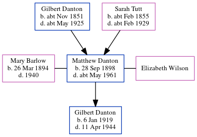

Matthew Constable Danton 1898 - c1961
[ Home ] | [ Calendar ] | [ Surnames Index ] | [ Errors ] | [ Family History ]A maintenance & textile fitter at a silk mill and the child of Gilbert Danton (a gas stoker) and Sarah Tutt, Matthew Danton, the first cousin twice-removed on the father's side of Nigel Horne, was born in Stratford, London, England on 28 Sept 18981,2,3,4 and was married twice - to Mary Barlow (on 8 Jun 1918 in Rochdale, Lancashire, England) Elizabeth Wilson (c. Feb 1943 in Rochdale, following the death of Mary Walton in 1940)6. He had 1 child with Mary Barlow, Gilbert.
During his life, he was living at 83 Abbey Lane, West Ham, London, England on 31 Mar 19018 and on 2 Apr 19117; and at 92 Bellshill Crescent in Rochdale on 29 Sept 19393.
He died c. May 1961 in Rochdale5.
Parents
- Gilbert Johnson was born c. Nov 1851
- Sarah Maria was born c. Feb 1855
Children
- Gilbert was born on 6 Jan 1919
Citations
- 1901 England Census Online publication - Provo, UT, USA: The Generations Network, Inc., 2005.Original data - Census Returns of England and Wales, 1901. Kew, Surrey, England: The National Archives of the UK (TNA): Public Record Office (PRO), 1901. Data imaged from the National
- 1911 England Census Online publication - Provo, UT, USA: Ancestry.com Operations, Inc., 2011.Original data - Census Returns of England and Wales, 1911. Kew, Surrey, England: The National Archives of the UK (TNA), 1911. Data imaged from the National Archives, London, England.
- 1939 Register - Findmypast (was the head of the household)
- England & Wales, FreeBMD Birth Index, 1837-1915 Online publication - Provo, UT, USA: The Generations Network, Inc., 2006.Original data - General Register Office. England and Wales Civil Registration Indexes. London, England: General Register Office. © Crown copyright. Published by permission of the Cont
- England & Wales deaths 1837-2007 - Findmypast
- England & Wales marriages 1837-2008 - Findmypast
- 1911 Census for England & Wales - Findmypast (was age 12 and the son of the head of the household)
- 1901 England, Wales & Scotland Census - Findmypast (was age 2 and the son of the head of the household)
Media
England & Wales births 1837-2006 Transcription - BMD-B-1898-4-AZ-000143-062
England & Wales marriages 1837-2008 - BMD/M/1918/2/AZ/000238/075
1939 Register Transcription - TNA-R39-4587-4587I-012-41
England & Wales marriages 1837-2008 Transcription - BMD-M-1943-1-AZ-000226-104
England & Wales deaths 1837-2007 - BMD/D/1961/2/AZ/000238/114
1911 England, Wales & Scotland Census Transcription - GBC-1911-RG14-09342-0267-4
1939 Register - TNA/R39/4587/4587I/012/40
Family Tree
Map
Generated by ged2site. Last updated on Jul 3, 2024